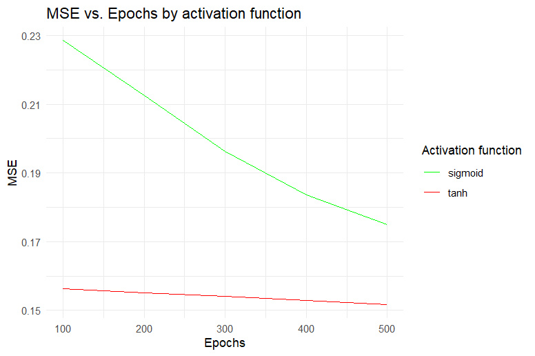
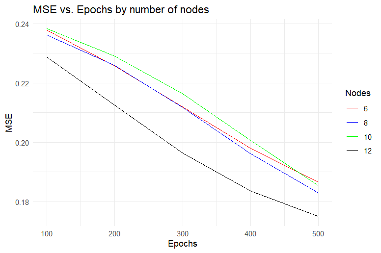
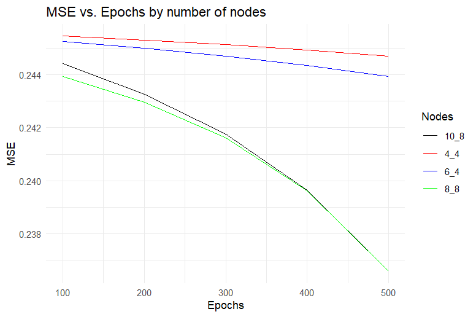
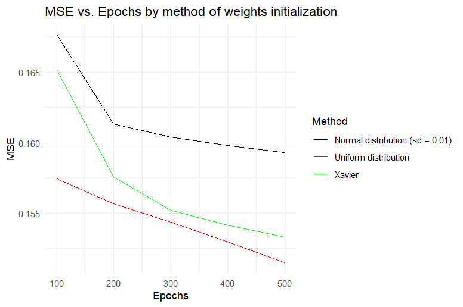
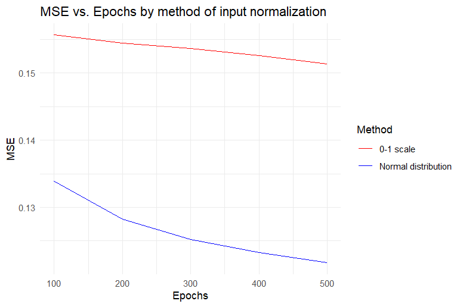
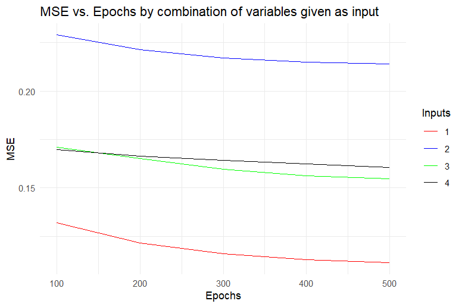
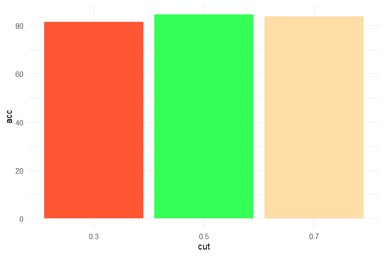
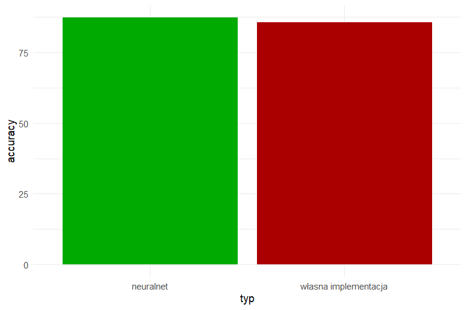

Sprawozdanie
Sieć neuronowa do klasyfikacji
W ramach zadania zaimplementowano sieć neuronową typu MLP (Multi-Layer Perceptron) od podstaw. Proces uczenia oparto na algorytmie wstecznej propagacji błędu (backpropagation).
Analiza porównawcza
Funkcja aktywacji
Wybór funkcji aktywacji determinuje zdolność sieci do mapowania nieliniowych zależności. Porównano funkcje:
- sigmoid
- tanh

Jak widać na powyższym wykresie tanh wykazuje się mniejszym błędem MSE na przestrzeni 500 epoch. Sigmoid uczy się szybciej, lecz wraz ze zmniejszaniem się błędu, tempo nauki spada.
Liczba neuronów w warstwach ukrytych
Zbyt mała liczba neuronów może prowadzić do “underfittingu”, natomiast zbyt duża drastycznie zwiększa koszt obliczeniowy.

Liczba 12 neuronów w jednej wartstwie ukrytej wykazuje się najniższym MSE oraz najwyższą dokładnością predykcji. Taka konfiguracja sieci została uznana za optymalną i stała się podstawą przy innych porównaniach
Liczba warstw ukrytych
Zwiększenie głębokości sieci pozwala na tworzenie bardziej złożonych abstrakcji, ale niesie ryzyko przeuczenia (overfitting).

Wszystkie konfiguracje neuronów w dwóch warstwach ukrytych osiągały gorsze wyniki od sieci z jedną dwunastoneuronową warstwą. Z tego względu uznane zostało, że jedna warstwa z dwunastoma neuronami jest optymalnym układem sieci.
Sposób inicjalizacji wag
Porównano inicjalizację losową na podstawie rozkładu normalnego o parametrach \(\mu = 0\) i \(\sigma = 0,01\), rozkład jednostajny na przedziale \([-0,5; 0,5]\) oraz metoda Xaviera.

Z powyższego wykresu wynika, iż rozkład jednostajny jest optymalną metodą. Na wykresie nie ma zawartego rozkładu na przedziale \([-1; 1]\), lecz on również został pobity przez wyniki rozkładu oznaczonego czerwoną linią.
Sposób normalizacji danych wejściowych
Sieci neuronowe są wrażliwe na skalę danych wejściowych. Porównano:
- Min-Max Scaling (przesunięcie do zakresu \([0, 1]\))
- Standaryzację (Z-score normalization).

Normalizacja do rozkładu normalnego o parametrach \(\mu = 0\) i \(\sigma = 1\) okazała się optymalnym wyborem, który znacznie zmniejszał błąd sieci.
Wybór danych wejściowych
Przeanalizowano, jak wybór różnych danych wejściowych wpływa na dokładność przewidywań sieci neuronowej. Wybrane dane wejściowe to: 1. Class, online boarding, seat comfort, inflight entertainment i on board service 2. Departure arrival time convenient, departure delay in minutes, gender, age i gate location 3. Gender, class, ease of online booking, age i food and drink 4. Departure delay in minutes, seat comfort, food and drink, class i flight distance
Zestawy te zostały wybrane według następujących kryteriów: 1. zestaw zawiera najbardziej skorelowane kolumny, 2. najmniej skorelowane, 3. zawiera losowe, a 4. zawiera te, które logicznie wydają się mieć najwyższy wpływ na satysfakcję z lotu w naszej ocenie.

Z powyższego wykresu wynika, iż uczenie na podstawie najlepiej skorelowanych wartości generuje najniższy MSE, a uczenie na podstawie najgorzej skorelowanych wartości wypada najgorzej pod tym względem. Nie ma znaczącej różnicy między świadomie wybranymi danymi, a danymi wybranymi losowo.
Różne wartości odcięcia klasyfikacji
Dla klasyfikacji binarnej domyślny próg to \(0.5\). Zmiana progu pozwala na balansowanie między precyzją (Precision) a czułością (Recall). Poniżej znajduje się porównanie dla wartości odcięcia \(0.3\) oraz \(0.7\).

Jak widać na powyższych wykresie najwyższą dokładność przewidywań osiągano dla wartości \(0.5\). Co ciekawe różnica w celności nie jest symetryczna i próg na poziomie \(0.7\) miał lepszy wynik od progu na poziomie \(0.3\).
Porównanie z gotowym narzędziem neuralnet
W celu walidacji poprawności własnego algorytmu, wyniki zestawiono z profesjonalną biblioteką neuralnet dostępną w języku R.

Dokładność osiągnięta przez neuralnet wyniosła \(87.31\)%, co jest wynikiem wyższym niż \(85.74\)%, czyli najlepszym wynikiem uzyskanym przez własnoręcznie napisaną sieć neuronową.